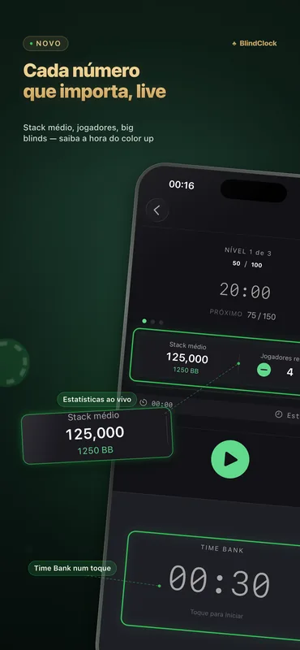
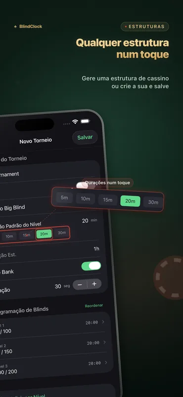
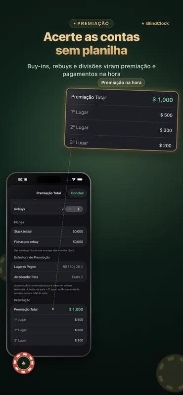

Tudo o que um anfitrião precisa
Feito para jogos caseiros e torneios de clube — preciso com a tela apagada, legível do outro lado da mesa.
Cronômetro de torneio preciso
Pause, retome ou pule níveis. O relógio continua preciso em segundo plano e sobrevive a um encerramento forçado — retome exatamente de onde parou.
Gerador de estrutura de blinds
Informe o número de jogadores, as fichas e a duração desejada — receba uma estrutura limpa, no estilo cassino, com intervalos, em um toque.
Calculadora de premiação
Buy-ins, rebuys e divisão de prêmios calculados na hora — acerte as contas no fim da noite sem precisar de planilha.
Time bank
Dê aos jogadores mais tempo para decidir com time banks configuráveis, completos com avisos e sons.
Live Activity & Dynamic Island
O nível atual fica na sua Tela Bloqueada e na Dynamic Island. Em um iPhone carregando, o StandBy o transforma em um relógio de torneio em tela cheia.
Tela de mesa no iPad
Gire um iPad para a horizontal e tenha uma contagem regressiva gigante com os blinds de cada lado — a mesa toda lê num relance, e a tela permanece acesa.
Compartilhamento de modelos
Exporte qualquer torneio como um arquivo .blindclock e envie por AirDrop a um amigo — ele importa exatamente a sua estrutura em um toque.
Sincronização com iCloud
Seus modelos de torneio acompanham você entre iPhone e iPad automaticamente — grátis para todos.
Veja em ação



Exemplos de estruturas de blinds
Uma estrutura bem-feita é assim: um turbo termina em cerca de 1,5 hora, um jogo caseiro padrão em cerca de 3, um deep stack em 4,5 ou mais. O gerador do BlindClock monta uma para o seu número exato de jogadores, fichas e duração desejada, em um toque.
| Nível | Turbo · 15 min | Padrão · 20 min | Deep stack · 30 min |
|---|---|---|---|
| 1 | 25 / 50 | 25 / 50 | 25 / 50 |
| 2 | 50 / 100 | 50 / 100 | 50 / 100 |
| 3 | 100 / 200 | 75 / 150 | 75 / 150 |
| 4 | 200 / 400 | 100 / 200 | 100 / 200 |
| 5 | 300 / 600 | 150 / 300 | 150 / 300 |
| 6 | 500 / 1000 | 200 / 400 | 200 / 400 |
| 7 | — | 300 / 600 | 250 / 500 |
| 8 | — | 400 / 800 | 300 / 600 |
| 9 | — | 500 / 1000 | 400 / 800 |
| Stack inicial | 5,000 | 5,000 | 10,000 |
Blinds mostrados como small blind / big blind. Adicione um intervalo de 10 minutos a cada quatro ou cinco níveis — o gerador do BlindClock os posiciona automaticamente.
Guia completo (em inglês): como organizar um torneio de pôquer em casa →
Novidades da 2.1
- Estatísticas da mesa ao vivo — o stack médio, os jogadores restantes e o stack médio em big blinds, atualizados a cada nível — direto na tela do relógio.
- Saiba a hora do color up — o número que os organizadores de verdade acompanham: quando fazer o color up, quando conversar sobre um deal, em que ritmo o torneio está andando. Toque para eliminar um jogador. Grátis para todos.
- Início mais rápido e ajustes — uma tela de abertura renovada e ajustes em todo o app.
BlindClock Pro
A versão gratuita é totalmente jogável — cronômetro, Live Activity, gerador, premiação, sincronização e até 5 torneios personalizados. O Pro remove o limite com uma única compra, para sempre, em todos os seus dispositivos.
- Torneios personalizados ilimitados
- Compra única
- Sem anúncios, sem assinatura
- Em todos os seus dispositivos